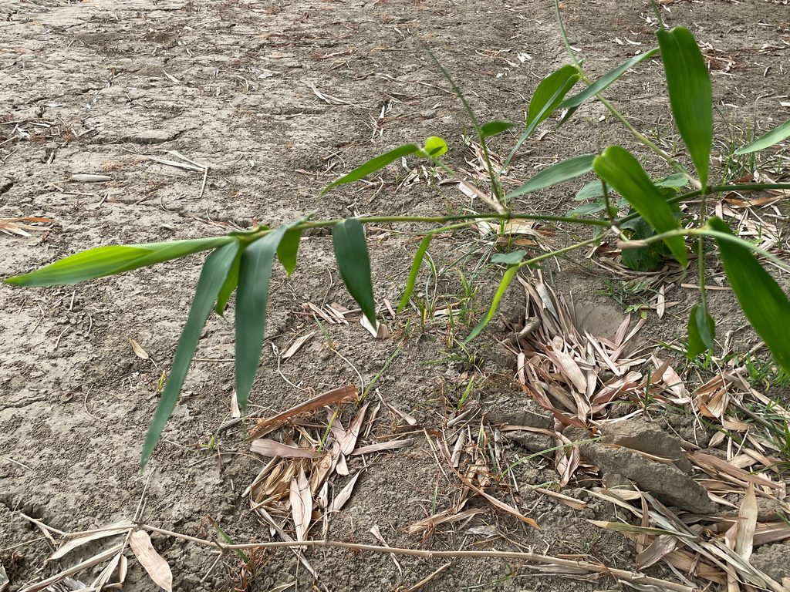
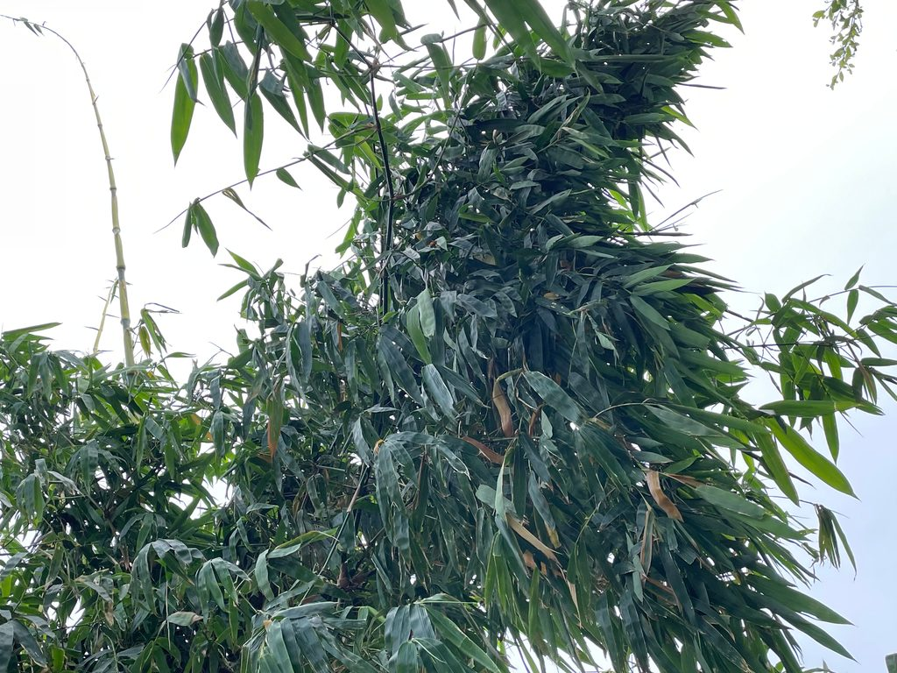
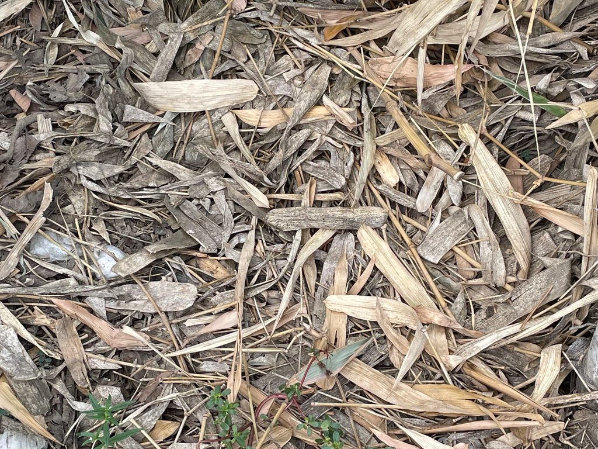
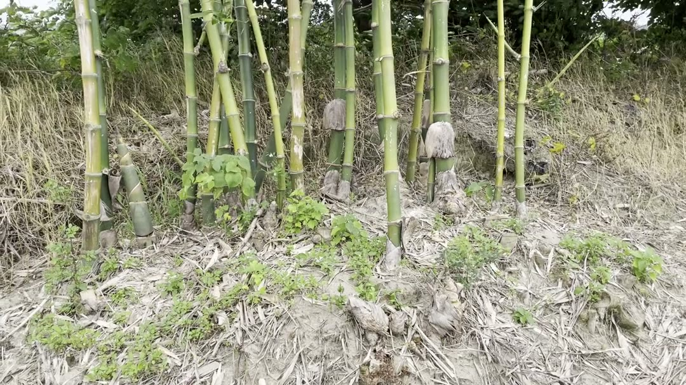
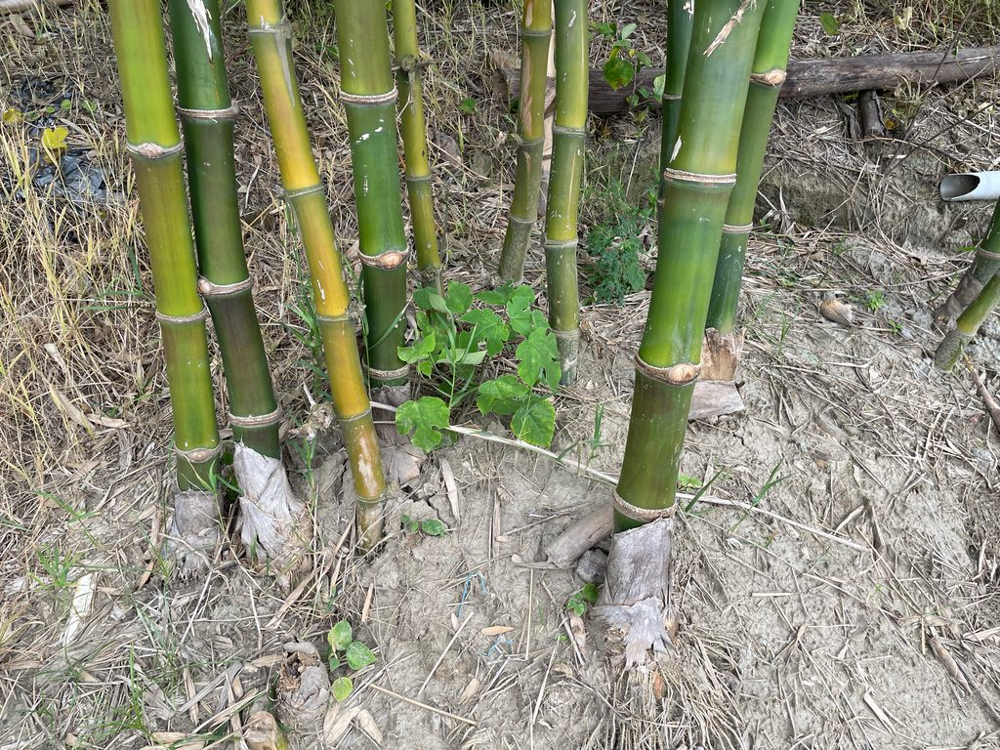
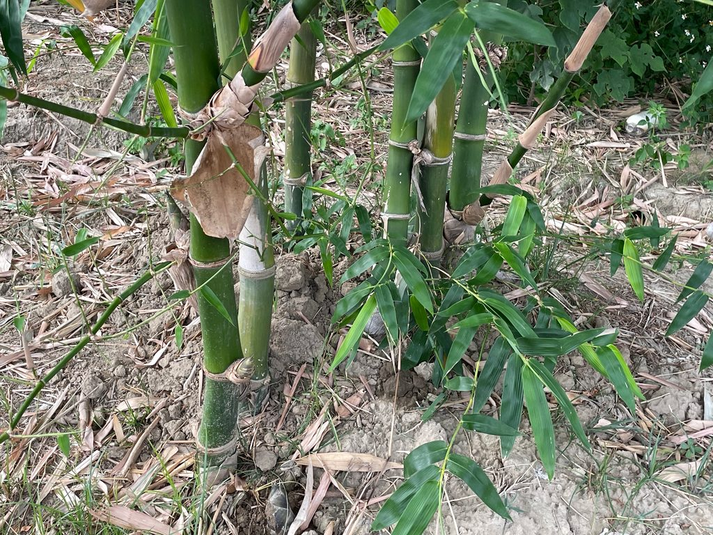
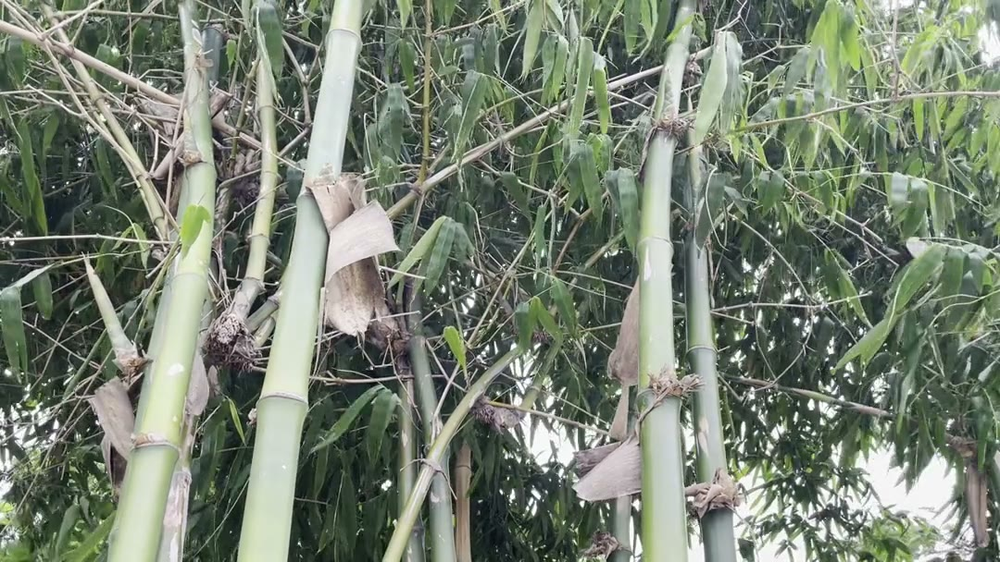

第三次書寫 · 颱風過後
竹子
過溪入口的竹林是阿公的象徵；颱風折損了它，卻在田的另一頭，等著被重新找回。

竹林
在過溪的入口處有一叢竹林，是我們時常休息、乘涼的好地方。稱之為竹林可能有點誇大，在五六年前的全盛期約莫有二十幾棵竹子所組成，高度可以到五六公尺左右，竹葉組織成的林蔭可以寬達三公尺，坐在竹林下可以免於午後雷陣雨的侵擾，也可以在夏天日照高昇之時帶來微風輕拂的涼意。
林下四散放著各種可以當作椅子的物體，像是石板、紅磚頭、紙箱片、水桶等，是我們平常休息時的好夥伴。阿嬤跟媽媽會在竹林下整理剛採收好的葉菜，把泛黃、蛀洞的殘葉剝下來，放在竹子根部當作堆肥，只留下嫩綠色的葉子作為回家烹煮的食材。

坐在磚頭上，可以感受到海邊的風陣陣拂過，偶爾有被風捲起的沙粒飛過眼前，在綠油油的菜田裡增添一絲朦朧的光景。我常常撿起地上掉落的細長竹葉，有深綠色的、有棕色的，搭配隨處可得的殘葉和小石子，就是一次愉快的扮家家酒，也是我童年對這片竹林的美好回憶。
颱風之後
五六年前，有一次特別強烈的颱風經過台中，侵擾了這片強壯的竹林。等到我再次回到過溪時，原本茂密、寬達幾公尺的竹葉，就只剩下寥寥幾棵竹子跟不足一米的遮蔭；原來的竹子本體是鮮豔耀眼的青綠色，現在變成了滄桑有斑點的棕黃色。
對小時候的我來說，這片竹林是阿公的象徵。阿公辛苦撐起一個大家庭、陪伴我們成長。
竹林在阿公離世後，仍持續屹立不搖在田裡守護我們好多年。
現在看到這樣飽受摧殘的竹子們，看到地上被風吹的四處凌亂的葉子，就覺得好不捨，也回想起以前跟阿公相處的種種回憶。

新的竹子
颱風過後一兩年，某天爸爸就說要去採筍子，就帶著我、提著藍色水桶往田深處走去。這時我才發現，原來在田的另一邊有另外三叢爸爸種的竹子，或許因為是年輕的竹子，顏色非常地飽滿、漂亮，即便在更強勁的風吹之下，也展現出堅韌的毅力。
在葉子沙沙作響的林蔭下，我重新找回了小時候對竹子的印象。

田的另一頭，爸爸種的年輕竹子，在風裡沙沙作響。

採筍
我一隻手拎著水桶、一隻手拿著小鏟子，呆呆地看著地上冒出的好多個小尖頭，突然意識到雨後春筍這句話在眼前具象化了。

筍子簡單來說就是還沒長大的竹子，通常會在竹子旁邊濕濕的土地上長大，通常是高十五公分左右、冒出地表的小尖頭，表皮會像竹節一樣一圈一圈，在尖頭的地方會有小小的開岔，走路的時候要小心不要跌倒坐下去，因為筍子的頂部真的很尖。
我很喜歡採筍子，雖然我還是不太會分辨哪些可以採，不過看著爸爸跟阿嬤手起刀落處理一個又一個小筍子，我慢慢也知道哪些是好吃的、哪些是不好吃的。目測二十五公分以下、微胖的筍子通常是好吃的，又嫩又清脆；細長超過三十公分的筍子通常口感會有點澀澀的，帶了一點苦味。
我們常常坐在竹林下處理筍子，要把外表堅硬的皮沿著一圈一圈的紋路剝下來，要用刀子把沾到泥土黑黑的部分削下來。剝下來的皮像是中空的三角圓錐，我常常把地上的筍子皮一個一個疊在一起，長長的就好像是另一個筍子一樣，再若無其事跟真的筍子一起放到袋子裡。

新長成的竹叢，又有了可以乘涼的綠蔭。
但每次回家前都會被媽媽發現，所以沒有成功把筍子皮帶回家過，真是可惜。